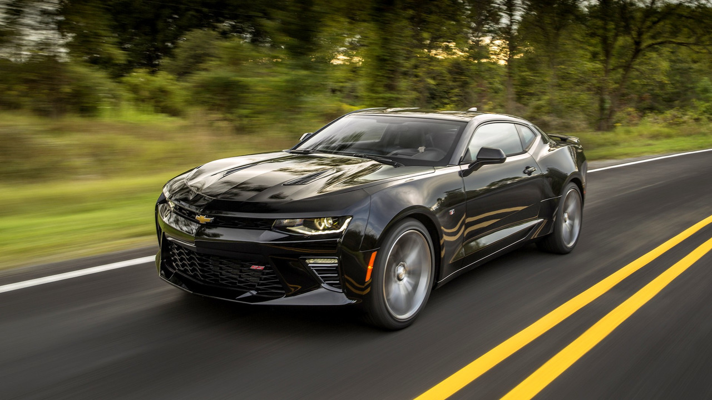
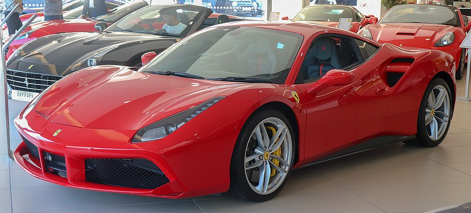
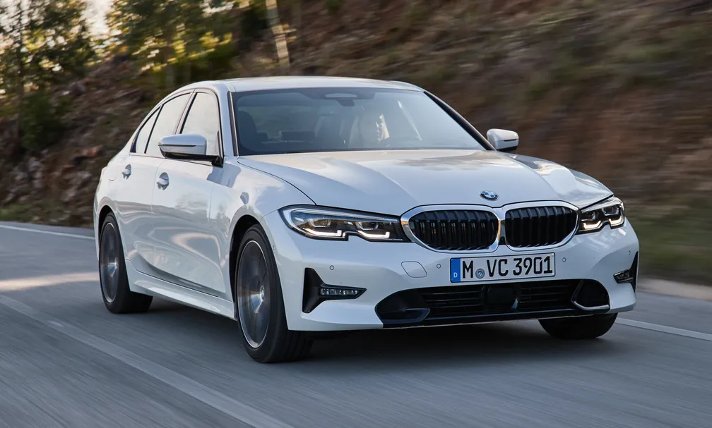
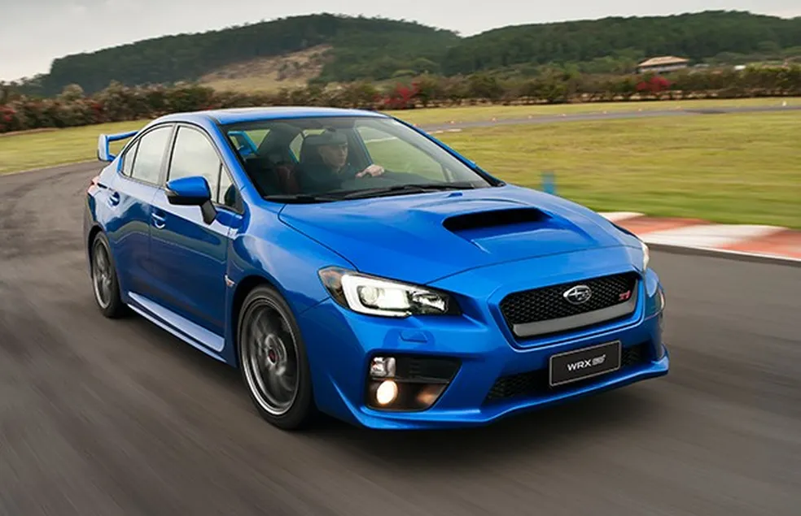
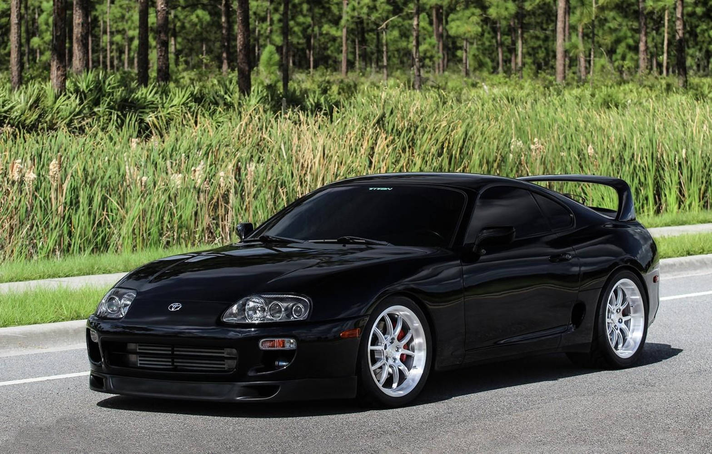
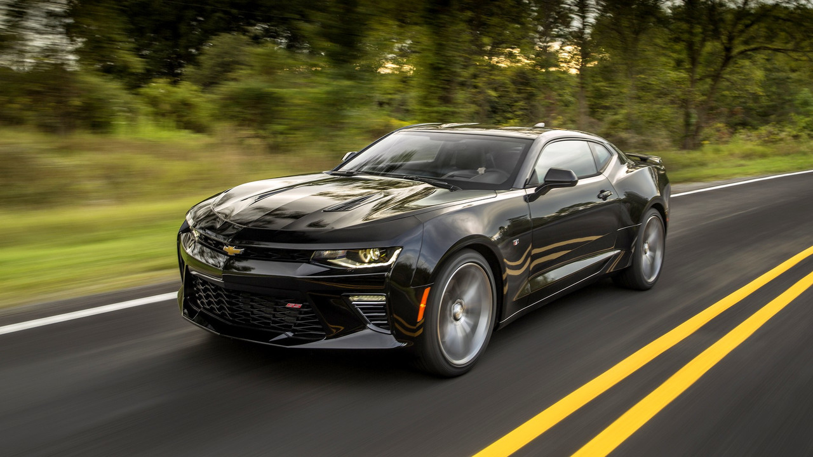
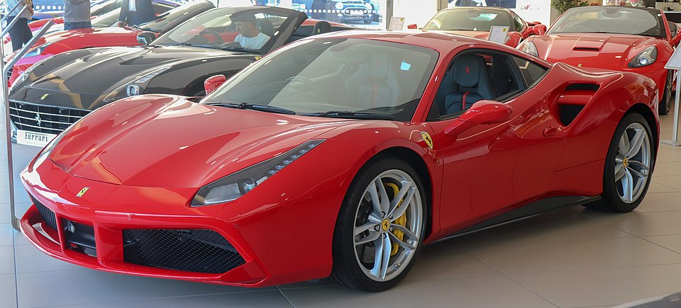
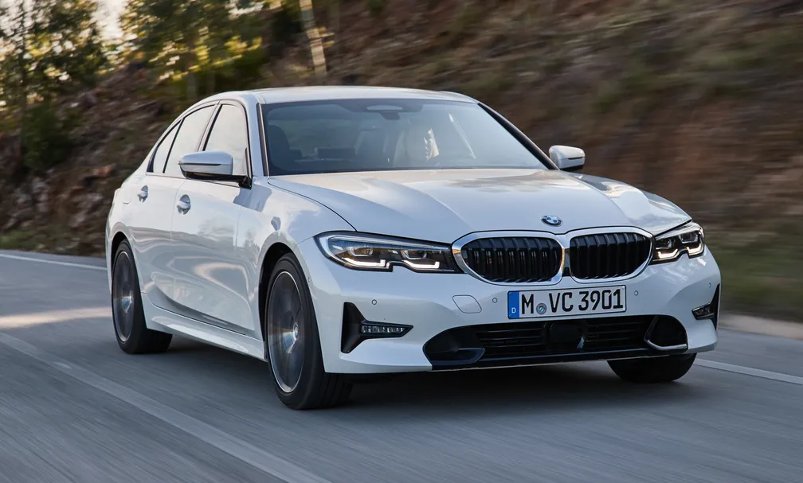
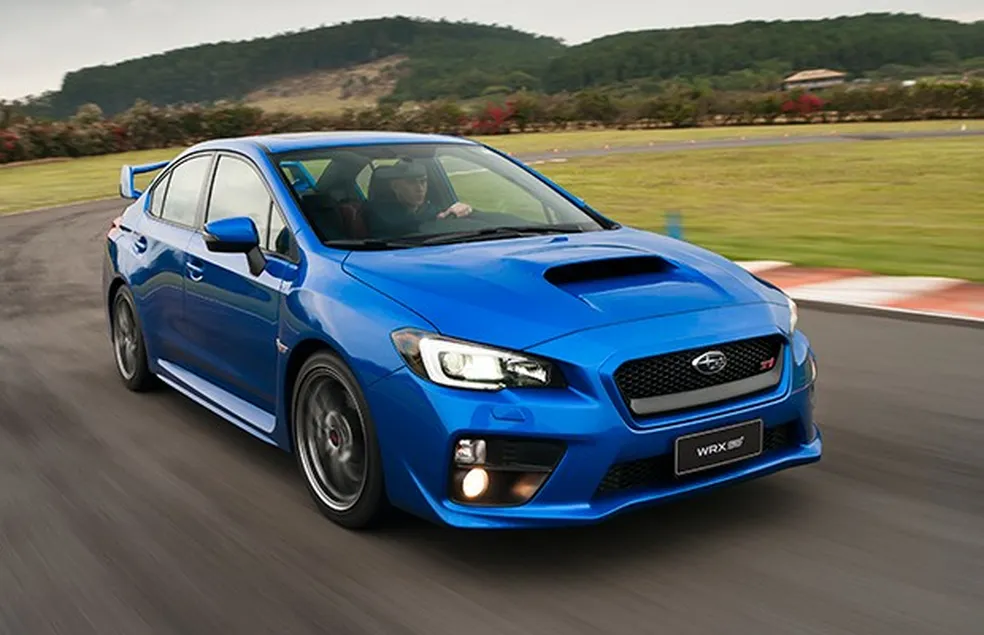
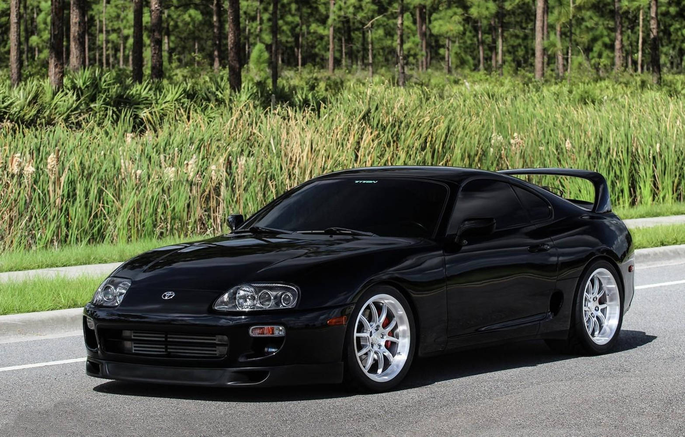

Alguns dos Carros Mais Iconográficos
O mundo dos carros é repleto de modelos icônicos que marcaram gerações. Desde os veículos mais populares e acessíveis até os supercarros de luxo e performance. O Fusca, o Camaro, a Ferrari 488 GTB, o BMW Série 3, o Subaru e o Supra são exemplos de carros que não apenas representam suas épocas, mas também possuem legiões de fãs e admiradores. Neste texto, vamos explorar a essência de cada um desses carros, suas características e o que os torna tão especiais.
Fusca
O Fusca, produzido pela Volkswagen, é um dos carros mais famosos e queridos de todos os tempos. Lançado em 1938, ele conquistou gerações com seu design simples, robustez e acessibilidade. Sua mecânica, apesar de simples, era extremamente eficiente, o que o tornou um dos veículos mais vendidos no mundo. Além disso, o Fusca é conhecido por sua durabilidade, sendo capaz de rodar por milhares de quilômetros sem grandes problemas. Seu charme retro e o apelo nostálgico continuam a atrair novos fãs até hoje.
Camaro
O Camaro é um dos muscle cars mais emblemáticos da história automobilística. Produzido pela Chevrolet desde 1966, ele se destaca por seu design agressivo e seu motor potente. Ao longo das décadas, o Camaro manteve seu caráter robusto e esportivo, sempre buscando equilibrar performance com conforto. Modelos como o Camaro SS e o ZL1 oferecem uma experiência de direção visceral, com aceleração impressionante e uma sonoridade marcante. A linha Camaro é símbolo de liberdade, potência e paixão por velocidade.
Ferrari 488 GTB
A Ferrari 488 GTB é uma obra-prima da engenharia italiana, combinando design elegante com desempenho de tirar o fôlego. Com um motor V8 turboalimentado, a 488 GTB oferece uma aceleração instantânea e uma estabilidade impecável em altas velocidades. Seu visual agressivo, aliado a um interior luxuoso, faz dela uma das Ferrari mais desejadas por entusiastas e colecionadores. A Ferrari sempre foi sinônimo de exclusividade e inovação, e a 488 GTB não é exceção, oferecendo uma experiência de condução inigualável.
BMW Série 3
O BMW Série 3 é um dos sedãs mais aclamados do mercado, conhecido por seu equilíbrio entre desempenho, conforto e sofisticação. Lançado em 1975, ele rapidamente se tornou um ícone entre os carros de luxo. Seu design elegante e suas linhas bem definidas transmitem um ar de modernidade e prestígio. Além disso, a BMW sempre investiu em tecnologia de ponta, o que garante uma direção precisa e uma experiência de condução superior. O Série 3 continua sendo uma excelente escolha para quem busca um carro que combine esportividade e classe.
Subaru
O Subaru é uma marca que se destaca pela sua robustez e versatilidade, especialmente nos modelos com tração integral (AWD). Famoso por sua performance em terrenos difíceis e em condições climáticas adversas, o Subaru é o carro perfeito para aventureiros e entusiastas de off-road. O modelo Subaru Impreza WRX, por exemplo, é a escolha favorita dos fãs de rally, com seu motor turbo e estabilidade nas curvas. Além disso, a Subaru é conhecida pela confiabilidade e durabilidade de seus veículos, tornando-os ideais para longas viagens e uso diário.
Supra
O Toyota Supra é um dos carros esportivos mais icônicos da indústria automobilística, especialmente famoso por sua participação na cultura do tuning e no cinema, como em "Vingadores e Velocidade Máxima". Lançado inicialmente nos anos 1970, o Supra ganhou fama mundial por seu desempenho extraordinário, com destaque para a geração A80, que estreou no final dos anos 1990. Com um motor de seis cilindros em linha, o Supra é sinônimo de potência e aceleração. Após um hiato, o Supra voltou com a geração A90, mantendo suas raízes esportivas, mas incorporando tecnologias modernas para agradar a nova geração de fãs.